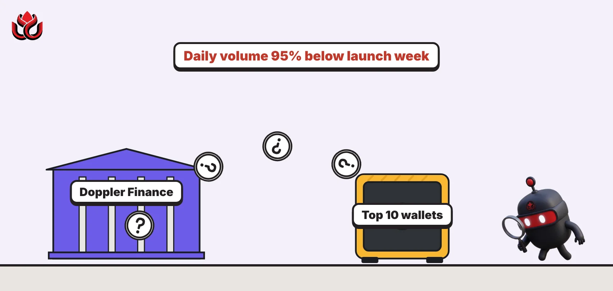
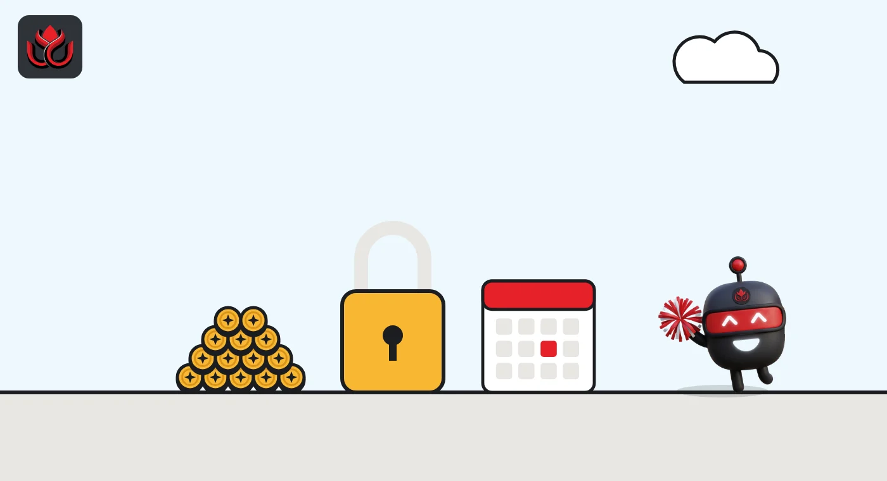
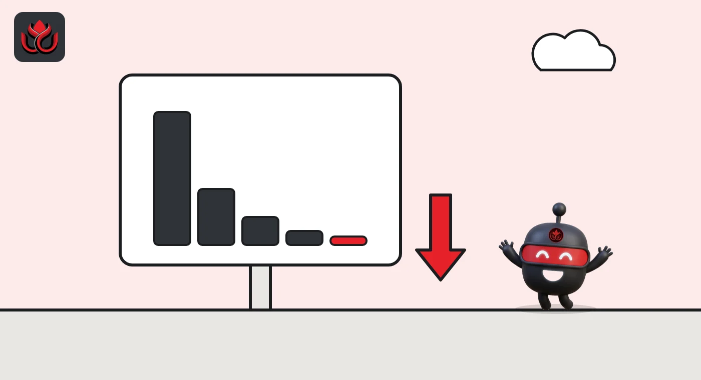

Doppler's XDP is trending again, with daily volume 95% below launch week. What is it?
Doppler Finance's XDP token sat fourth on DeepSea's 24-hour trending list late on November 1 (ET), a month after launch. CoinGecko shows it hit a record low on October 30, and DeepSea finds the top 10 wallets hold 95% of supply.

Key points
- XDP ranked fourth on DeepSea's 24-hour trending list late on November 1, 2026 (ET), with $18.75 million of volume across about 56,200 transactions.
- CoinGecko shows daily XDP volume fell from $431.6 million on October 1 to under $30 million in late October, and an all-time low of $0.01715 on October 30.
- Only 1 billion of 10 billion XDP circulate, per CoinGecko. Doppler's docs show team and investor tokens locked for 12 months.
What DeepSea's data shows
On DeepSea's Trending list, set to 24 hours, Doppler Finance's XDP token on Base ranked fourth at 11:40 p.m. ET on November 1, marked with a fire icon. DeepSea showed it 34 days old, with an $18.02 million market value and $18.75 million of volume across about 56,200 transactions.
Its token page gives XDP a health score of 83 out of 100 and the label "High risk". The one warning is concentration: the top 10 wallets hold 95.4% of supply. Liquidity was $1.36 million (7.6% of market value), with no developer wallet outflow and nothing sent to exchanges in 7 days. DeepSea counted 15,700 holders.
Big wallets were absent. DeepSea showed no smart money, whale or KOL trades in XDP over 7 days.
Data: DeepSea (desea.io), checked November 1, 2026, 11:40 p.m. ET.
What Doppler Finance does
Doppler Finance describes itself as infrastructure for tokenized capital markets. Its main live product is a set of vaults. The XRP Vault takes XRP deposits on the XRP Ledger and pays returns in XRP, sourced from what Doppler calls CeDeFi and real-world asset yields. Withdrawals take seven days and are then processed in a batch around 01:00 UTC, currently 8 p.m. ET the evening before. The docs list Fireblocks-custodied deposit, treasury and withdrawal wallets. A second vault accepts Ripple's RLUSD stablecoin.
The vault docs carry clear limits. Doppler says the XRP Vault currently runs on CeDeFi strategies with institutional custodians and selected centralized platforms, and that no onchain yield is being generated yet. It charges no platform fees on deposits or withdrawals. It is closed to users in the United States and sanctioned regions.
Doppler says on its core features page that a lending module is in development, tied to the XRP Ledger's planned native lending feature (XLS-66d). Details on assets and launch timing have not been published.
The XDP token
According to Doppler's token page, XDP is the project's utility and governance token, issued on Base with a total supply of 10 billion. Staking is planned to unlock "protocol privileges" such as priority access to new vaults. A Safety Module, where stakers cover shortfalls and can be slashed, is listed for a later phase.
The allocation table shows 43% for ecosystem and incentives (17.19% unlocked at launch, the rest over 60 months), 18% for the team and 16% for investors (both locked for 12 months, then vesting over 36 and 24 months), 14% for the treasury, 4% for liquidity, 4% for partners and 1% for a genesis airdrop that unlocked in full.
The Doppler Points page explains the current pull: in Season 3, staked XDP earns points at 20 times the rate of vault deposits (0.2 points per dollar per hour against 0.01). Doppler states points do not guarantee future token rewards. Unstaking also has a cost: XDP stops earning points as soon as an unstake is confirmed, through a seven-day withdrawal wait.

How fast volume faded
CoinGecko's daily trading volume for XDP shows how quickly launch-week activity faded.
XDP daily trading volume (CoinGecko)
US$ million
Source: CoinGecko, Doppler Finance (XDP), daily data checked November 2, 2026
Price, supply and where it trades
CoinGecko listed XDP at about $0.0180 early on November 2 (UTC), with an $18.0 million market value and a fully diluted value of $179.9 million. Only 1 billion of the 10 billion tokens circulate. Its price history starts on September 29. XDP set an all-time high of $0.02745 on October 11 and an all-time low of $0.01715 on October 30, and was trading about 5% above that low. Volume in the past 24 hours was about $23 million. About two-thirds of it ran through the XDP/USDC pool on Uniswap V3 on Base. A second Base pool, on Aero Slipstream, carried about 7%. OKX, KuCoin, Kraken and Bitvavo also list it, but each handled only a small share of the day's trading.
CoinGecko's daily closes show a narrow range in late October, between $0.0172 and $0.0187.

Where the data disagree
DeepSea and CoinGecko do not match on the token's peak. DeepSea shows an all-time high of $0.0388, against CoinGecko's $0.02745. The gap likely reflects different price feeds or early pool trades, but neither source explains it. LC Insight uses CoinGecko for price history and DeepSea for holder data.
LC Insight analysis
This section is our reading of the facts above, not a statement of fact.
- We think the 95% top-10 figure may partly reflect the locked team, investor, treasury and ecosystem allocations in Doppler's own table, though DeepSea does not label those wallets. The risk to watch is when large holder wallets start to move.
- The 20x points boost for staking is a strong incentive to lock XDP. That can reduce selling for now, but points have no promised value, so the effect may fade when Season 3 ends.
- A return to the trending list with volume still 95% below launch week looks like a brief bounce in attention, not a new wave of demand. Big wallets on DeepSea have stayed out.
What's next
- Movements from XDP's largest holder wallets on DeepSea
- Launch of the Safety Module and Doppler Lending
- End date and rewards of Doppler Points Season 3
- First team and investor unlocks, 12 months after launch
Disclaimer. This article is based on public information and the sources listed below as of the update time shown. It is for information only and is not investment, legal or tax advice. Figures may change as companies and authorities publish new data.